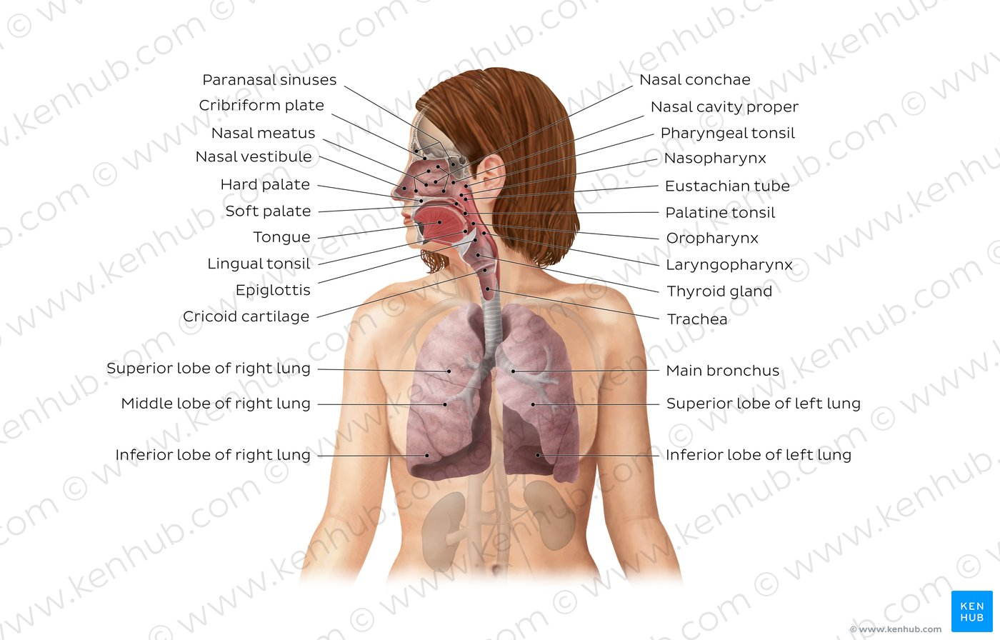
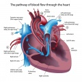
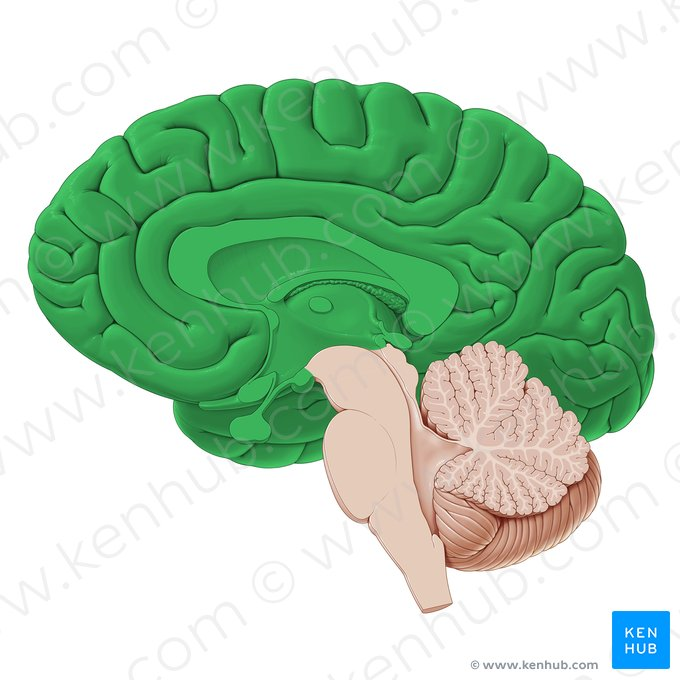

Different body systems
- Respiratory system 
- The respiratory system consists of a series of organs; the nasal cavity, pharynx, larynx, trachea, bronchi, bronchioles and lungs (alveoli). The nasal cavity and pharynx are together called the upper respiratory system, while the remainder of the organs comprise the lower respiratory system.
- Respiratory system organs, with the exception of the alveoli, function to conduct air into the lungs aided by the muscles of respiration (mainly the diaphragm and intercostal muscles).
- Circulatory System 
- The vessels of the cardiovascular system are the heart, arteries, capillaries, and veins. This is a transport system, within which the blood is propelled by the heart in a closed circuit through vessels.
- The regulation of the cardiovascular system occurs via an innumerable number of stimuli, including changing blood volume, hormones, electrolytes, osmolarity, medications, adrenal glands, kidneys, and much more. The parasympathetic and sympathetic nervous systems also play a key role in the regulation of the cardiovascular system[2].
- Nervous system 
- Morphologically and topographically, the nervous system is divided into the central (CNS) and peripheral (PNS) nervous systems. Whilst functionally, the nervous system is considered as two parts; the somatic (SNS) or voluntary nervous system, and the autonomic (ANS) or involuntary nervous system.
- The peripheral nervous system definition is that it conducts information from the CNS to the target tissues, and from the target tissues to the CNS. It consists of nerves and their ganglia.